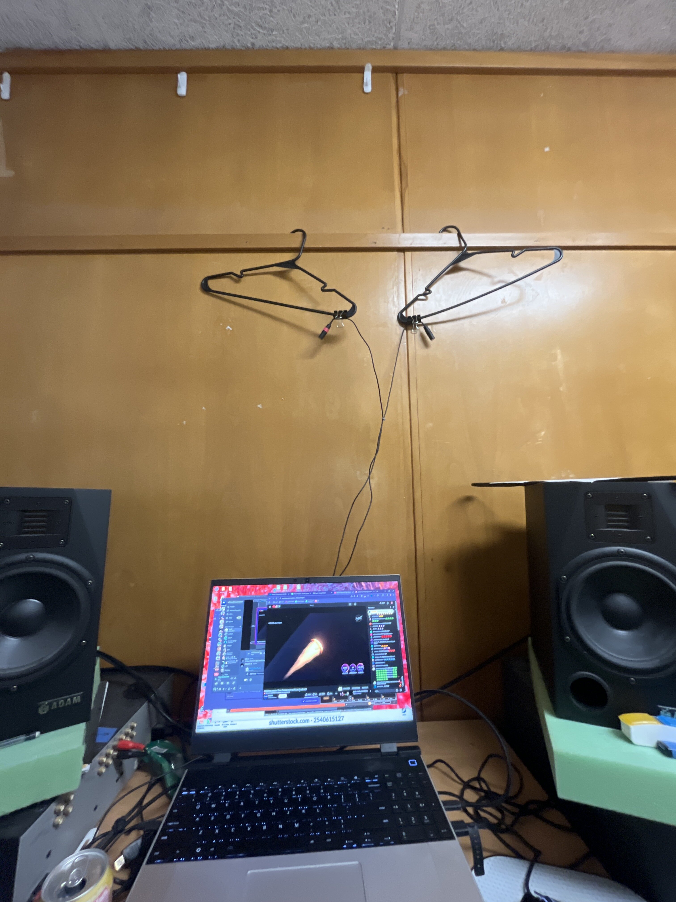
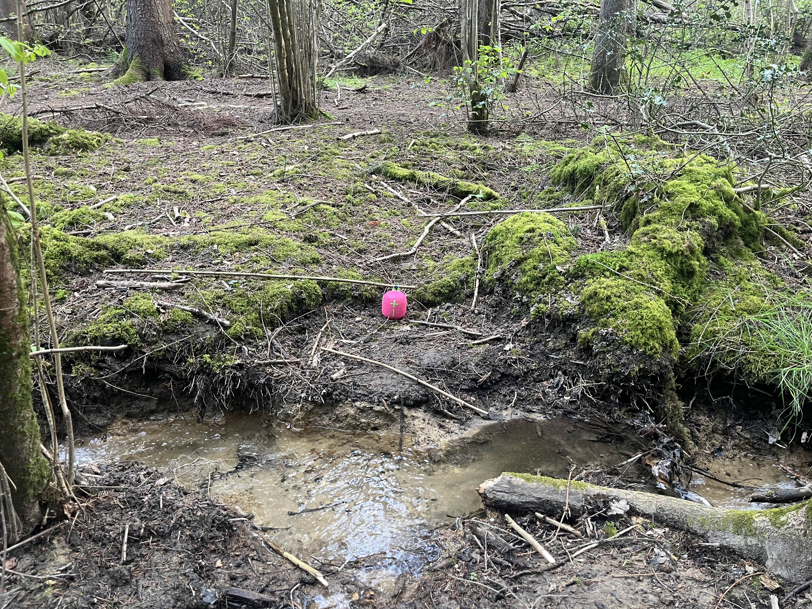
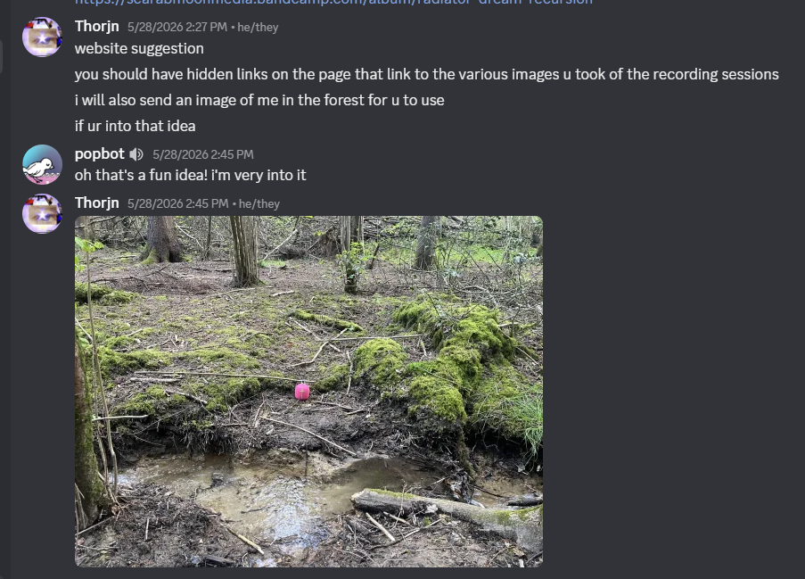
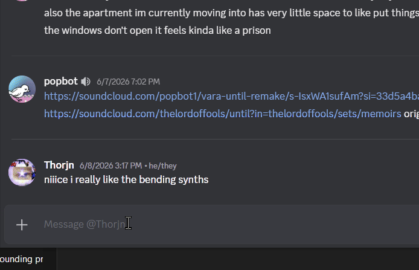

hello and welcome to the view extras page!
I really enjoyed making this; im gonna share some photos that were taken and also a bit about my process and some of what I learned. idk im typing this rn honestly.
making this whole thing was a really unique experience for me, and was highly inspired by stuff that Elliott had already been doing. when they asked me to do something for scarab moon media I was really excited cause at that point I hadn't given much thought to putting together a project using mainly "one take improvisations". I tried a number of performance setups, which was so much fun because up to that point all of my music has been exclusively "in the box". After some experimentation I eventually landed on a setup that felt like a pretty good compromise between the imprecision and unpredictabillity of the hardware I was using and the extreme control I'm used to having in a DAW. I also learned a lot from the post-processing workflow, and ended up adapting some techniques from elliott to degrade and "worldize" the sound, which was some of the most fun I've had working on a project in a really long time. Here's some pictures from the "worldization" process, where I was playing back and recording a +12st version of the album in a bunch of spaces in and around my college campus.





elliott also did one of the worldization takes:


